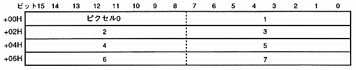
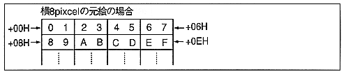

Mode 2 is 64 colors, mode 3 is 128 colors, and mode 4 is 256 colors. Represents a color with a palette code and a color bank.
1 pixel is represented by 8 bits. You can draw 64 colors, 128 colors and 256 colors respectively. 8 bytes are required to represent 8 pixels.
∙ 6 bits, 7 bits, and 8 bits represent the palette code, and the upper 10 bits, 9 bits, and 8 bits are added with the color bank from the color bank word (command table start address + 06H) and written to the frame buffer as 16-bit data. In mode 2 and mode 3, the upper 2 bits and 1 bit are ignored. When 8bit / pixel (when frame buffer is rotated or high resolution), the lower 8 bits of 16 bits are written to the frame buffer.
* Since drawing pixel data is a color bank code, color calculation is not possible.

Figure 6.12 Drawing examples of modes 2, 3, and 4
